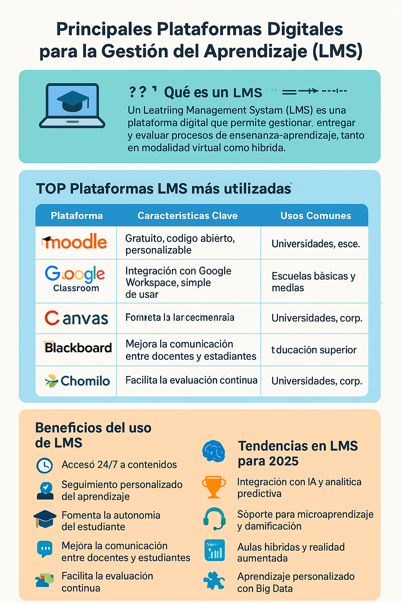

Infografía
Infografía creada con Canva AI que resume las principales plataformas digitales para la gestión del aprendizaje.
Referencia: Canva AI (2025). Infografía generada con IA.
El presente portafolio aborda dos ejes fundamentales para la gestión moderna de la información del aprendizaje: el uso de herramientas digitales que optimizan la administración de contenidos y procesos académicos, y las técnicas de análisis de datos que permiten convertir la información recolectada en estrategias de mejora educativa. Ambos temas responden a la necesidad de que docentes y estudiantes desarrollen competencias para manejar entornos digitales y tomar decisiones basadas en evidencias.
Las plataformas de gestión del aprendizaje (LMS) como Moodle, Canvas o Google Classroom permiten centralizar materiales, actividades y evaluaciones, facilitando el seguimiento del progreso académico y la interacción entre docentes y estudiantes (García & López, 2024). [Cita indirecta parentética]
Según Pérez (2024), la adopción de estas herramientas digitales no solo mejora la organización de los contenidos, sino que también promueve la autonomía y el aprendizaje colaborativo. [Cita indirecta narrativa]
El análisis de datos educativos transforma registros de asistencia, calificaciones y participación en información útil para personalizar la enseñanza y anticipar riesgos de deserción. La implementación de dashboards y métricas predictivas permite tomar decisiones pedagógicas más precisas (Martínez et al., 2023).
Infografía creada con Canva AI que resume las principales plataformas digitales para la gestión del aprendizaje.
Referencia: Canva AI (2025). Infografía generada con IA.
Gráfico generado con ChatGPT + Python que muestra un ejemplo de correlación entre el uso de plataformas LMS y el rendimiento académico.
Referencia: ChatGPT + Python (2025). Gráfico generado con IA.
Video generado con Runway ML que explica cómo la analítica de aprendizaje mejora la toma de decisiones en las aulas virtuales.
Referencia: Runway ML (2025). Video generado con IA.
Para la elaboración de los recursos se emplearon varias herramientas de IA:
Prompt ejemplo usado en ChatGPT: “Genera un texto académico que explique las ventajas del uso de herramientas digitales y técnicas de análisis de datos en la educación, incluyendo una cita indirecta parentética y una narrativa”.
Ventajas: agiliza la creación de materiales, mejora la presentación de la información y fomenta la creatividad.
Limitaciones: requiere verificación de datos, control de sesgos y una revisión crítica por parte del autor.
Nombre: Estrella Nicole Aguilar Sanchez
Carrera: Administración y negocios internacionales
Intereses: Soy estudiante de Administración y Negocios Internacionales con interés en el comercio exterior, la negociación intercultural y el desarrollo de proyectos de exportación. Me apasiona el análisis de mercados emergentes, la gestión de negocios sostenibles y las estrategias de marketing internacional, buscando aplicar mis conocimientos para impulsar la expansión de empresas en un entorno global competitivo.